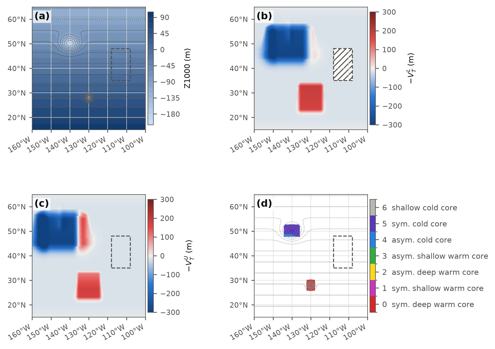
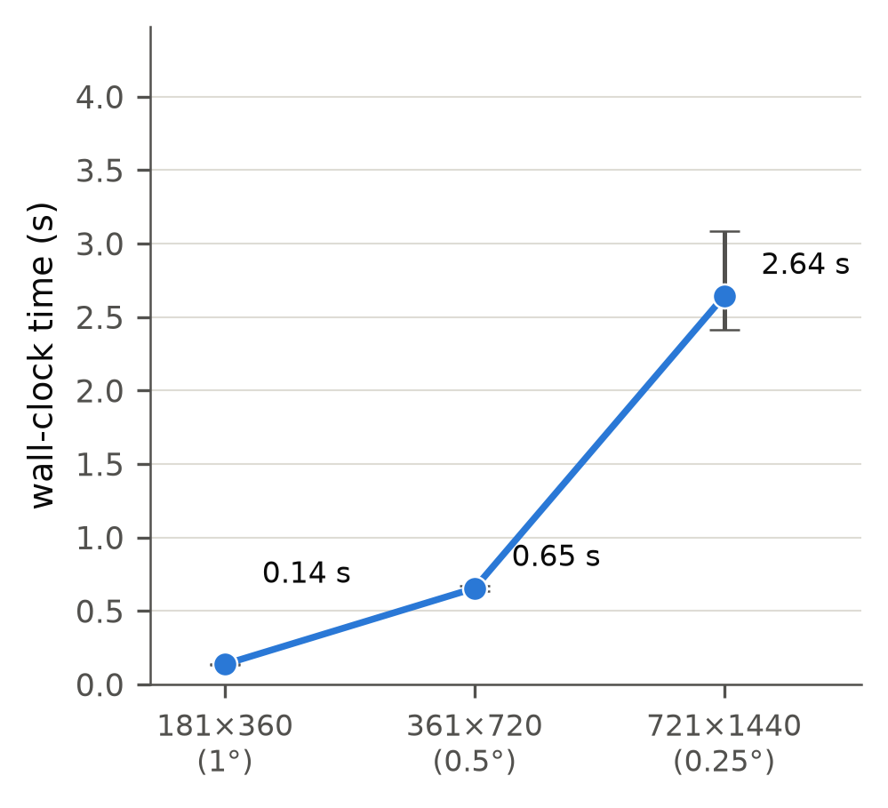
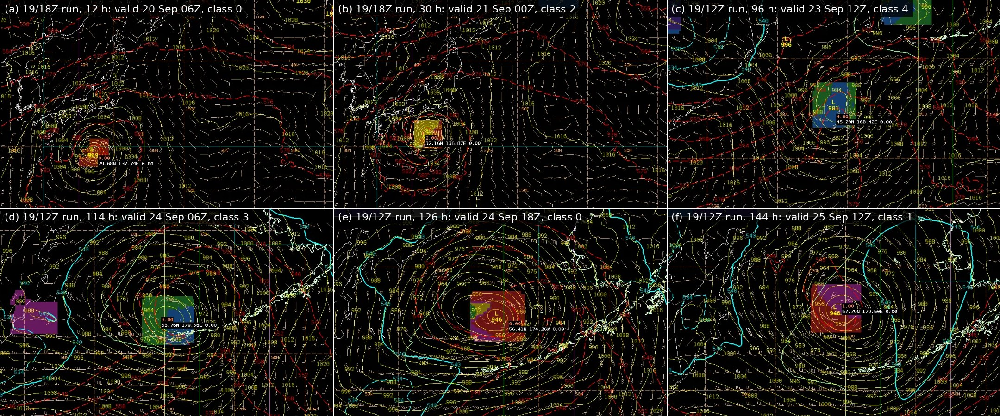
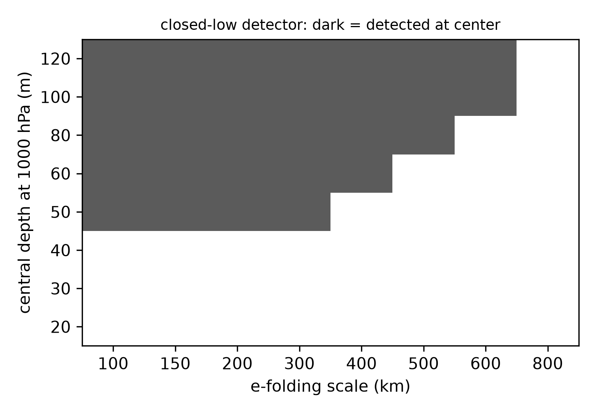

Gridded Cyclone Phase Space as an AWIPS Derived Parameter for Diagnosing Tropical Cyclone Structure and Extratropical Transition
Abstract
The cyclone phase space of Hart (2003) characterizes a cyclone's thermal structure through lower- and upper-tropospheric thermal wind parameters, derived from the vertical change of the geopotential height perturbation within 500 km of the center, and a low-level thermal asymmetry, from which Evans and Hart (2003) defined objective onset and completion times for extratropical transition. This work reformulates the parameters as gridded AWIPS II derived parameters computed on demand from geopotential height on standard isobaric levels, mean sea level pressure, surface pressure and the deep-layer wind. At each grid point the height perturbation is evaluated over a 500 km window by a separable sliding-extrema filter, the thermal wind is its regression slope against log pressure over 925 to 700 hPa and 500 to 300 hPa, the asymmetry is the difference of true semicircle means across the window-mean deep-layer wind, and a 5 hPa ring test on mean sea level pressure restricts classification to closed lows. One categorical field assigns each detected low to one of seven classes formed from the quadrants of Hart's two diagrams. A global 0.25° grid takes about 2.7 s per forecast hour. On GFS forecasts the class followed Typhoon Dujuan through its full transition on the path the Florida State University phase diagrams traced for the same run. On a synthetic life cycle evaluated with both methods, the class sequence is the same, the asymmetry parameter matches Hart's to 1%, onset falls at the same hour and completion one frame later. For a profile not linear in log pressure the 925 to 700 hPa band reads a deep warm core about 12% high and the upper band about 9% low, and the lower band a warm seclusion two to three times higher than Hart's layer; the square window adds under 0.2% for compact storms.
Executive summary for forecasters
What it is. Five new D2D fields that tell you what kind of cyclone a model is forecasting, not just where it is or how deep. They work on every model that carries the standard levels these fields need (925 to 300 hPa heights, mean sea level pressure, surface pressure and winds at four levels). They run on every frame, with no tracker and no advisory. The science is Hart's cyclone phase space, the same diagnostic behind the Florida State University phase diagrams, computed on the model grid instead of along a storm track.
What to load. Start with Hart CPS Class over MSLP and 1000 to 500 hPa thickness. It draws one colored block over each closed low. Reds mean a symmetric warm core, a hurricane or typhoon structure. Yellow and green mean the storm has become asymmetric, Hart's word for frontal, and is transitioning. Blues mean a cold core, an ordinary extratropical low. Magenta means a symmetric shallow warm core. After a blue or green block it means a warm seclusion, a warm core re-formed inside a mature extratropical low, which is often when the winds peak; from the start of a storm's life it means a subtropical or hybrid storm. The other four fields are the numbers behind that block: the lower and upper warm-core strength, the asymmetry B, and a single index from +3 (hurricane) to −3 (deep cold low).
How to use it. Step through the frames. Onset of transition is the hour the block turns yellow or green; completion is the hour it turns blue. Load a second model beside the first and compare those hours; where they disagree is your transition uncertainty. Expect completion to read up to one frame later than the Florida State page would show; onset agreed to the hour on the synthetic test case. Expect the block to flicker between neighboring colors when a storm sits on a boundary.
What it is not. It is not an intensity or wind forecast, and it will not classify open troughs, weak lows under about 5 hPa deep, or anything over high terrain. Read it alongside the wind and pressure fields, not instead of them.
1. Background
Cyclone phase space (CPS) describes a cyclone's thermal structure from the geopotential height field alone, with no appeal to satellite presentation or a forecaster's eye (Hart 2003). Three numbers, each computed here as a gridded field (Section 2), locate a storm in the space (Figure 1): B, the left–right asymmetry of low-level thickness across the storm's track, and the lower- and upper-tropospheric thermal wind parameters −VTL and −VTU, which are positive for a warm (tropical-like) core and negative for a cold (baroclinic) one (Figures 2 and 3). Structure matters to marine forecasting because it anticipates two behaviors a track and intensity forecast alone do not: a storm undergoing extratropical transition (ET) typically expands its wind field well beyond the radius it carried as a tropical cyclone (Jones et al. 2003; Evans and Hart 2003), and a storm that instead completes ET into a warm-seclusion cyclone, the frontal-fracture structure described by Shapiro and Keyser (1990), can re-intensify to hurricane-force winds far outside the tropics (Hart et al. 2006). Evans and Hart (2003) defined objective ET onset as the hour B exceeds 10 m and completion as the hour −VTL turns negative. Kofron et al. (2010) and Studholme et al. (2015) examined how consistently these and other objective criteria time ET, and Bieli et al. (2019a,b) built a global climatology of ET from the phase space and assessed its statistical performance. The warm core erodes from the top down during transition, so the loss of the upper warm core, −VTU turning negative, commonly precedes completion (Evans and Hart 2003; Hart et al. 2006). Jones et al. (2003) catalogued the forecast challenges ET poses more broadly. Operational access to these parameters has been through the storm-centered diagrams of the Florida State University cyclone phase page (Hart, cited 2026), produced for the cyclones that page's tracker identifies in a fixed set of models. Those diagrams are not available inside the forecast workstation, they do not cover every model in a local inventory, and they cannot be called up for a low the forecaster picks out on the map.
![Two-panel schematic of Hart's cyclone phase space diagrams sharing one 168-hour extratropical transition trajectory colored from light to dark blue by forecast hour. Left: parameter B against the lower thermal wind, the four asymmetry and warm/cold quadrants shaded and labeled, the trajectory crossing the B equals 10 meter onset line and then the negative lower thermal wind equals zero completion line, both crossings marked with an x, and a dashed branch toward a warm seclusion point in the symmetric warm core quadrant. Right: lower against upper thermal wind, the four structural quadrants shaded and labeled, the same trajectory and warm seclusion branch.](figures/fig10_two_diagrams.png)
![Three-panel figure illustrating the thermal wind concept. Left and center: vertical cross-sections with pressure on a logarithmic axis from 1000 to 300 hectopascals, showing seven flat reference lines each with a height-perturbation curve dipping toward the bottom of the panel over the storm center, shaded light red for a warm core whose dip shrinks with height and light blue for a cold core whose dip grows with height, with the 500 kilometer circle marked by dashed vertical lines and the height range at 925 and 500 hectopascals marked and labeled. Right: height range plotted against pressure on the same logarithmic axis for both cores, with least-squares fit lines and slope values for a shaded lower band and a shaded upper band.](figures/fig8_thermal_wind_concept.png)
![Two-panel plan-view figure illustrating parameter B. Left: a warm-core vortex at the origin of a 1200 kilometer square, its thickness contours closing symmetrically around the center, a 500 kilometer dashed circle split by a northeast-pointing motion arrow into left and right halves shaded two neutral tints, and B annotated as near zero. Right: the same vortex on a north-south thickness gradient with the warm flank labeled to the south and the cold flank to the north, the same circle, motion arrow and split, and B annotated as positive and above the 10 meter line.](figures/fig9_b_concept.png)
2. Method
At each pressure level p, the height perturbation amplitude is the spread of geopotential height over an analysis window W:
ΔZ(p) = maxW Z − minW Z
Hart's original window is a 500 km circle around the storm's own, moving analysis center; a gridded derived parameter has no such center, so this module re-centers the same window on every grid point instead, using a 500 km half-width square rather than a circle because a square sliding max/min along grid axes runs in O(N log w) per level (Section 5), while a pointwise circular window over a whole grid cannot. The half-width is held in kilometers, not grid cells: on the latitude-longitude grid the zonal half-width in grid cells is set row by row from the cosine of latitude, so the half-width is 500 km at every latitude. The square's corners reach 707 km, 41% farther than Hart's circle, and the consequences are of two kinds. For an isolated Gaussian vortex the square samples more of the decayed far field than the circle, so ΔZ is larger by an amount that grows with the vortex scale: 0.002% at a 150 km e-folding scale, 2% at 250 km, about 21% at 400 km and about 52% at 600 km, on a 0.25° grid. For a perturbation whose horizontal shape is the same at every level, both bands inflate by the same factor, so the sign of each thermal wind term and the zero crossings are preserved while the magnitudes are not. On a background height gradient the square sees a larger range than the circle by a factor |cos θ| + |sin θ|, where θ is the angle between the gradient and the grid axes: no excess for an axis-aligned gradient, 41% at 45°, 27% averaged over direction. The environmental gradient is not a small contribution. It enters Hart's circle as well, by definition, and because it grows with height in a baroclinic zone it lowers both terms of any storm embedded in one: on a synthetic deep warm core (true terms +191 m) a background gradient of 5 m per degree at 1000 hPa, growing to 14 m per degree at 300 hPa, lowers the upper term to +70 m when the gradient runs along a grid axis and to −4 m at 45° to it; at twice that gradient the upper term reads −85 and −193 m (Figure 19a). The environmental response is by design: the phase space describes the cyclone together with the baroclinic zone it has entered, and the fall of the upper term as a storm meets a trough is the transition signal itself, in Hart's formulation and in this one. The synthetic case only shows how early that signal appears, since the storm's own core never changed. The square adds a direction-dependent share on top of Hart's, and that share is the only part that is a bias relative to his circle. Figure 4b shows the geometry: the window maximum sits at a corner. The thermal wind for a layer is the least-squares slope of ΔZ against ln(p) over that layer's levels:
−VT = ∂(ΔZ) / ∂(ln p)
positive when ΔZ shrinks with height (warm core), negative when
it grows (cold core). Hart's own layers are 900–600 and
600–300 hPa, fitted over the 50 hPa levels of his data, a
spacing carried only by the GFS in this D2D inventory; this package
instead uses the universal standard levels
925/850/700 hPa (lower) and 500/400/300 hPa (upper), leaving
700–500 hPa deliberately unassigned rather than biasing one
band's slope with a layer that straddles Hart's true 600 hPa
boundary. A level is blanked below ground before any window filter
runs, when psfc < min(p, 900 hPa), a cap that keeps a
legitimately deep open-ocean low from being mistaken for terrain, and a
level whose window is less than half valid is blanked rather than
fitted, so that a clipped window near an ice sheet does not yield a
slope built on different footprints at different levels. On a global
latitude-longitude grid the window wraps in longitude.
Classification is restricted to closed lows by two tests on the mean sea level pressure (MSLP) field, accepted in Pa or hPa. A grid point is a candidate center if its MSLP is within 0.6 hPa of the minimum over a 300 km neighborhood, and it is accepted if the mean MSLP over the 300 to 500 km ring around it (a square ring, the difference of two box means) exceeds its own by at least 5 hPa. A uniform baroclinic slope satisfies the first test and not the second. MSLP is the surface the forecaster already contours, so the lows the detector finds are the lows on the chart, and it is defined everywhere, so nothing is extrapolated below ground inside a deep low. The detector does no terrain masking of its own: the class and index are blanked over terrain because their band levels are, so the class is missing wherever HVTL is. The test measures relief between the center and the ring rather than the depth of the low, so its effective floor is about 6 hPa for a compact low and 10 to 12.5 hPa for a broad one, which can go unclassified (Figure 18). Accepted centers are dilated by 200 km to form the region in which the classification and index are reported.
The continuous index folds both terms into one number from −3 to +3:
index = 2 tanh(−VTL / 100) + tanh(−VTU / 100)


Parameter B
Hart's third number is a left–right asymmetry, not a vertical one. Over the same 500 km circle −VTL and −VTU use, split into a right half and a left half relative to the storm's own direction of motion:
B = h (ZR − ZL)
where ZR and ZL are the mean 900 to 600 hPa thickness over the right and left halves and h is +1 in the Northern Hemisphere and −1 in the Southern, so that warm air to the right of the track in the Northern Hemisphere, and to the left of it in the Southern, reads positive. B is relative to the direction of motion, not to latitude: the same storm in the same thickness field reads positive moving one way and negative moving the other (Figure 6). Evans and Hart (2003) took 10 m as the threshold separating a symmetric, tropical-like thickness field from an asymmetric one. A grid point has no track of its own, so this package evaluates the same semicircle difference about every grid point, with a motion proxy in place of the track. At each point the mean 925 to 700 hPa thickness is taken over the north, south, east and west half-disks of radius R = 500 km. Each is built from one cumulative sum along the grid row per row offset, with the chord half-width at that offset converted to grid cells by the row's own spacing, so that it scales with the cosine of latitude; each cell is weighted by its area, and the sums wrap in longitude on a global grid. For a motion unit vector (mx, my), eastward and northward components, the right-minus-left difference and B are
ZR − ZL = mx (ZS − ZN) + my (ZE − ZW), B = h (ZR − ZL) λ
with ZN, ZS, ZE
and ZW the four half-disk means and λ the
layer-scaling factor below. The combination is the wavenumber-one
interpolation between the two axis-aligned splits. Expanded in
azimuthal harmonics about the point, harmonic k contributes
nothing to any semicircle difference when k is even, the
axisymmetric part included, and (4/π)/k times its area-mean
amplitude when k is odd. The k = 1 contribution turns
with the heading exactly as the combination does, so the result is
exact for any wavenumber-one pattern about the point: for a uniform
gradient and for a storm-scale dipole alike. Odd harmonics
k ≥ 3 are evaluated only along the two axes and are not
captured; their weight in Hart's semicircle difference is bounded by
(4/π)/k times their area-mean amplitude, 0.42 for
k = 3 against 1.27 for k = 1. The tests compare the
half-disk means with a brute-force half-disk average and check a
uniform gradient to within 1%, a dipole of 400 km scale to within
2% of the brute-force semicircle difference, the Southern Hemisphere
sign, the steering floor, the longitude wrap, and agreement between
60°N and 20°N to within 2%. Earlier versions of the package
used a first-order form, h (8R/3π) times the
window-mean thickness gradient projected on the right-hand normal of
motion, times λ, to which the semicircle form reduces for a
uniform gradient; it is retained in the module as
parameter_b_grid_gradient for comparison only, and
Figures 13 and 19d compare against it.
The motion proxy is the deep-layer mean wind (850, 700, 500 and 300 hPa) averaged over the 500 km window. The area mean of the geostrophic wind over a window depends only on the height along the window's boundary, so any vortex whose perturbation vanishes at the boundary contributes nothing to the average, symmetric or not; what remains is the environmental flow that carries the storm, the usual deep-layer-mean steering estimate. On a synthetic vortex with 40% wavenumber-one asymmetry in an 8 m/s westerly the proxy returns 8.0 m/s from 270° at the center. Below a window-mean speed of 2 m/s the heading is undefined and B is set to missing. The 925 to 700 hPa layer this package uses is not Hart's 900 to 600 hPa layer, so the result is rescaled by
λ = ln(900/600) / ln(925/700) = 1.455
The rescaling assumes the layer-mean temperature contrast across the storm is the same in 925 to 700 hPa as in 900 to 600 hPa. In a shallow low-level baroclinic zone the deeper layer's contrast is the smaller, so λ overstates B there and biases onset early. The former first-order form also under-read a storm-scale asymmetry, which biased onset late; the semicircle means remove that under-read (Section 6). The remaining known biases of B are therefore λ, early in a shallow baroclinic zone, and the uncaptured odd harmonics k ≥ 3, such as a warm-seclusion tongue folded into one side of the circle, whose sign is not known in general; the net of the two for a real transition is not known. Away from a closed low, the gridded B is a property of the environment and the motion rather than of a storm: it is the thickness contrast across the flow over the window, the semicircle difference of the ambient thickness, and only its value at a low center corresponds to Hart's B. A stationary or steering-opposed system has no well-defined motion vector, and B is set to missing at such points rather than estimated.
Joint classification
Hart's two diagrams above are two projections of one
three-dimensional space (B,
−VTL, and −VTU)
that happen to share the −VTL axis.
Each diagram alone carries one piece of information the other lacks:
the B–−VTL diagram says
whether the storm is asymmetric, the
−VTL–−VTU
diagram says whether a warm core is deep or shallow. Classification
on all three parameters at once preserves both distinctions and
reduces the operational task from reading two panels and combining
them visually to sampling one field at the low center.
HCPSclass does this with Hart's thresholds, B
against 10 m and both thermal wind terms against 0, and no
neutral band on any of the three. The joint space has eight cells;
the two cells with a cold lower and warm upper core are merged into one
code regardless of B, giving seven classes
(table below; the quadrants are those of Figure 1). A storm's class
is the cell of this space that its (B,
−VTL, −VTU)
triple falls in, and the two classic diagrams are the projections of
that space onto two of its faces (Figure 7). The
colors form three groups so that onset and completion read as
abrupt shifts: reds for a symmetric warm core, yellow and green for
a storm in transition, blues for a cold core:
| Code | Color | Name | B | −VTL | −VTU | Typical system |
|---|---|---|---|---|---|---|
| 0 | red | symmetric deep warm core | ≤ 10 | warm | warm | hurricane, typhoon |
| 1 | magenta | symmetric shallow warm core | ≤ 10 | warm | cold | subtropical storm, or warm seclusion once B falls |
| 2 | yellow | asymmetric deep warm core | > 10 | warm | warm | hurricane meeting a trough, transition beginning |
| 3 | green | asymmetric shallow warm core | > 10 | warm | cold | transition under way |
| 4 | blue | asymmetric cold core | > 10 | cold | cold | extratropical low, transition complete |
| 5 | indigo | symmetric cold core | ≤ 10 | cold | cold | occluded or cutoff cold low |
| 6 | gray | shallow cold core (lower cold, upper warm) | any | cold | warm | perturbation peaking at mid-levels |
| blank | no closed low in MSLP, below ground (HVTL missing), or B undefined (window-mean steering below 2 m/s) | |||||
The codes are ordered along a typical extratropical transition
(0, 2, 3, 4). A warm seclusion re-forms a low-level warm core while
the upper core stays cold, so −VTL turns
positive again: class 4 to 3 while the bent-back front keeps B
above 10 m, and 4 to 1 if B also falls (Hart et al.
2006). HCPSclass reports a state, not an event. Onset
and completion are crossings, and a storm whose B passes
10 m in the same frame that −VTL
passes zero moves from 0 to 4 without visiting 2 or 3. The Evans and
Hart (2003) onset is therefore read as the frame at which HB crosses
10 m and completion as the frame at which HVTL crosses zero, from
an animation of those two fields, with the class as the summary of
the state at each frame.
![Four-panel synthetic figure demonstrating parameter B. Top left: 925 to 700 hPa thickness contoured with steering-flow arrows and two identical warm-core vortex centers marked A and A prime, one in easterly steering and one in westerly steering. Top right: the gridded parameter B field, negative over the southern half and positive over the northern half, with the B equals 10 meter contour drawn. Bottom left: the classification field, vortex A reading class 0 over its whole footprint and vortex A prime reading class 2 throughout. Bottom right: Hart's asymmetry diagram with B on the vertical axis against the lower thermal wind, the four quadrants shaded, a schematic 168 hour transition trajectory, the onset and completion crossings annotated, and the two synthetic vortices plotted as diamonds at their computed values.](figures/fig7_parameter_b.png)
![Two perspective views of one three-dimensional box whose axes are the lower thermal wind, parameter B and the upper thermal wind, all in meters. Planes at B equals 10 meters and at zero on both thermal wind axes cut the box into cells, drawn as translucent boxes in the seven class colors: red, magenta, yellow, green, blue and indigo cells on either side of the B plane, and one gray cell spanning both sides where the lower core is cold and the upper warm. Two trajectories of the same synthetic life cycle thread through the cells, Hart's in gray and the gridded method's in red, each with markers shading from light to dark by forecast hour, running from the symmetric deep warm core cell through the asymmetric warm cells to the asymmetric cold cell, then the symmetric cold cell and back into the symmetric shallow warm cell, with the gridded onset and completion points marked.](figures/figJ_phase_space_3d.png)
HCPSclass, drawn as translucent boxes in the colors of
the class table above and labeled with their codes; class 6 (lower cold, upper warm) is one box
spanning both halves of the B plane, which is why eight cells
give seven classes. The two trajectories are the
synthetic life cycle of Section 6 (Figure 13), evaluated
with Hart's method (gray circles) and the gridded method (red
squares), markers light to dark by forecast hour from 0 to
168 h, with the gridded onset (42 h) and completion
(114 h) marked with an ×. (a) and
(b) The same space from two viewing angles. The class of a storm is the
box its point sits in; dropping the −VTU
axis gives the diagram of Figure 1a and dropping B gives
Figure 1b. (Appendix A)An interactive version of this figure, which can be rotated and read by hovering, is at figures/phase_space_3d.html.
Relation to the storm-centered diagrams
This package and the storm-centered diagrams of the Florida State University page (Hart, cited 2026) compute the same three numbers but differ in the following ways, which matter when comparing the two:
- Hart evaluates at one tracked center following a storm's path; this package evaluates at every grid point and reports the value at each detected low center.
- Hart's product is a trajectory through the phase diagram; this package's product is a map per forecast hour. The trajectory is recovered by animating and reading the three fields at the center.
- Hart uses a 500 km circle; this package uses a square of 500 km half-width, retained for speed (Section 5). The square inflates ΔZ for anomalies broader than about 250 km and adds a direction-dependent share of any background gradient on top of the share Hart's circle already carries, both quantified in Section 2; signs and zero crossings are preserved for an isolated storm, magnitudes are not, and in a strong baroclinic zone the environment can move the upper term across zero in either formulation.
- Hart regresses over 900 to 600 hPa and 600 to 300 hPa at 50 hPa spacing; this package uses 925, 850, 700 hPa and 500, 400, 300 hPa. The lower band lies entirely below Hart's layer, so its magnitude differs from his by an amount that depends on the vertical profile of the core anomaly: near zero for a profile linear in ln p, and two to three times Hart's value for a shallow warm seclusion (Section 6, Figure 17). Signs and zero crossings carry over.
- Both compute B from semicircle means. Hart's are the two half-circle means about the tracked center, split by the tracker's storm motion; this package's are half-disk means about every grid point, combined as the wavenumber-one interpolation to the heading of a motion proxy, the window-mean deep-layer wind, scaled from the 925 to 700 hPa layer, and missing for a stationary or steering-opposed storm.
- Hart's diagrams are drawn for the cyclones a tracker identifies; this package classifies any closed low in MSLP that passes the detector of Section 2 on any model in the local inventory, with no tracker.
- The Florida State page smooths the parameters with a 24 h running mean before plotting (Hart, cited 2026); this package's fields are instantaneous per forecast hour, so they are noisier frame to frame, and the flicker described in Section 7 is the visible consequence.
- A tracked center is evaluated where the tracker places it; this package evaluates every grid point, so it masks below-ground levels explicitly and blanks near ice sheets and high terrain.
- The window sees every feature within 500 km of the point, so a second low or a strong upper trough inside it enters ΔZ at every level and alters the slope; a tracked center has the same exposure but a forecaster sees only one number for it. The dilated regions of two lows closer than about 400 km can merge.
3. Data
The real cases are GFS 0.25° forecasts from five cycles: 2026 September 17 1200 UTC, September 19 1200 and 1800 UTC, September 20 0600 UTC and September 24 0600 UTC. Each was evaluated in the CAVE D2D display at the Ocean Prediction Center, with the derived parameters computed on demand from the model's own standard-level grids, and read either as values sampled at the MSLP center or as the colors of the class field; the table at the start of Section 6 lists which. The storm-centered comparison is the Florida State University cyclone phase page (Hart, cited 2026) for the same GFS runs, computed there at 0.5° and smoothed with a 24 h running mean before plotting; its values were read from the published diagrams, not recomputed. Phase-space magnitudes depend on the resolution and dataset they are computed from (Manning and Hart 2007), so the two are compared here in sign and timing more than in magnitude. The synthetic material, the schematic trajectory of Figure 1 and the idealized fields behind Figures 2 to 9 and 13 to 19, is defined in the figure scripts and summarized figure by figure in Appendix A.
4. Properties of the gridded thermal wind: amplitude, sign and tilt
Hart's thermal wind terms, −VTL and −VTU, are the vertical derivative, with respect to ln p, of the height range ΔZ over a fixed 500 km radius, a quantity proportional to the storm-relative thermal wind through geostrophic balance at that length scale (Hart 2003). Evaluating ΔZ at the standard levels and regressing it against ln p (Section 2) computes Hart's quantity itself rather than inferring core structure from a related field. Three properties follow. Amplitude. The window captures the anomaly of a typical cyclone relative to its 500 km surroundings, not merely its curvature at the center; like Hart's own parameters, ΔZ is defined relative to that radius and therefore scales with storm size. Sign and hemisphere. ΔZ is a scalar range with no directional component, so the thermal wind terms need no sign convention and are the same in both hemispheres; only parameter B's directional split needs the factor h of Section 2. The square window is not isotropic (Section 2), and no projected grid has yet been tested; every result here is on a regular latitude-longitude grid. Tilt. A vertical displacement of the upper-level center from the surface center does not defeat the measure at the surface center, because each level's ΔZ is evaluated over the same surface-anchored window at every level, and as long as the displacement is smaller than the 500 km half-width that window still contains the displaced anomaly's minimum, its center, so the height range at that level is still set by the anomaly, though the anomaly's far side may extend past the window edge. Under that condition the thermal wind at the surface center continues to reflect the true vertical structure even when the upper center sits well away from it. Away from the surface center the pointwise field is not tilt-neutral: a point on the side the upper center has moved away from sees the perturbation weaken with height and reads warm in the upper band. That signature is confined to the raw HVTL and HVTU fields; the class and index are evaluated only inside the closed-low mask, which excludes it. Figure 8 demonstrates both for a cyclone with a 393 km upper-level displacement, 79% of the half-width; the tolerated displacement is 500 km along a grid axis and 707 km along a diagonal, and the dependence of the terms on tilt has not been mapped beyond this single case.
![Four-panel figure on a single synthetic, vertically tilted cold-core cyclone. Top left: tilt geometry, with 925 hPa height contoured solid and 300 hPa height contoured dashed, the surface low center marked with a plus, the 300 hPa height minimum marked with an open circle, and the horizontal displacement between them annotated. Top right: the gridded lower thermal wind field. Bottom left: the gridded upper thermal wind field. Bottom right: the joint classification field, all evaluated at the same fixed surface low center marked in the first panel.](figures/fig4_tilt.png)
5. Implementation
The diagnostics are implemented as a self-contained set of AWIPS II
D2D derived parameters, evaluated on demand in CAVE's embedded Python
interpreter, one frame at a time, from grids already held in the local
inventory. They require no server process, no scheduled job and no
external cyclone tracker. HVTL and HVTU need geopotential height on
their three levels and surface pressure; HCPSidx and HCPSclass also
need mean sea level pressure for the closed-low detector, which the
definitions request under the names the inventory may carry (the
baseline MSLP alias, the raw PMSL field, and 1000 hPa height
converted at 8 m per hPa as a last resort), trying each in
turn so that a model without an MSLP field still classifies; HB and
HCPSclass also need wind components at 850, 700, 500 and
300 hPa for the motion proxy and the Coriolis pseudo-field for
the hemisphere sign. The sliding window that ΔZ is built
from runs in O(N log w) per level through a doubling
extremum filter rather than a per-pixel scan, which is what keeps a
full seven-level classification affordable on a global grid (Figure
9). The installed footprint is one Python module
(cps_HartCPS.py), five XML derived-parameter definitions
(HVTL, HVTU, HB, HCPSidx, HCPSclass) and two colormaps, a diverging
one for the signed fields and a categorical one for the
classification. HVTL and HVTU are the negatives of Hart's thermal
wind, −VTL and −VTU,
positive for a warm core, although their names carry no sign; HB is
B in meters after the layer rescaling by λ (Section 2).
The half-disk means behind HB and HCPSclass depend on a module
constant that declares which way the grid's rows run; a wrong
setting exchanges the north and south half-disks, which flips the
sign of B for zonal motion without affecting HVTL or HVTU, and
the constant is verified once per site at installation.
executeHartClass adds the semicircle-mean and
motion-proxy passes to the thermal wind computation and takes a
median of 2.68 s per forecast hour (range 2.48 to 2.94 s) on
a 0.25° global grid, of which the parameter B step is
0.47 s, against 0.21 s for the former first-order
form.

6. Results
Validation to date is a small log of real GFS cases from five cycles (Section 3; table below), sampled at the MSLP center where values were recorded, and constitutes a check that the fields behave as designed rather than a calibration.
| Cycle | Storm or region | Forecast hours | What was sampled | Figure |
|---|---|---|---|---|
| 17 Sep 1200 UTC | Typhoon Dujuan | 72 h | class and values (HVTL, HVTU, HCPSidx; B not sampled) | none |
| 17 Sep 1200 UTC | Typhoon Dujuan | hour of leaving the deep warm core (valid 21 Sep 1800 UTC) | class only, compared with the Florida State diagram | none |
| 17 Sep 1200 UTC | North Atlantic deep low | not recorded | class only (values not recorded) | none |
| 19 Sep 1800 and 1200 UTC | Typhoon Dujuan, life cycle | 12 to 144 h | class only | 10 |
| 20 Sep 0600 UTC | Typhoon Dujuan | 0 to 120 h | values at one point per frame (all four products) | none |
| 24 Sep 0600 UTC | North Atlantic | 6 to 126 h | class only, from colors | 11 and 12 |
Typhoon Dujuan at 984 hPa (GFS 2026 September 17 1200 UTC, 72 h forecast) read HVTL = 120 m and HVTU = 180 m, a deep warm core (HCPSclass 0 or 2, the distinction resting on B, which was not sampled); HCPSidx read 2.5 one grid point away, where the definition of Section 2 evaluates to 2.6 at the sampled point. Hart's bands and this package's differ (Section 2), so these magnitudes are not compared with his published values here. For the same storm, the first forecast hour at which the classification left the deep warm core state (HCPSclass 0 or 2) in the same GFS run, valid 2026 September 21 1800 UTC, matched the hour the Florida State University cyclone phase page showed the same run moving from deep to shallow warm core, to within the 6 h frame interval and with the page's 24 h smoothing noted (Section 2). That hour is the loss of the upper warm core, a sign that transition is under way, and not the Evans and Hart onset, which depends on B and is not yet validated. A deep extratropical low over the North Atlantic in the same cycle classified in a cold-core class with both thermal wind terms negative; its values were not recorded and the case is to be re-sampled.
The GFS runs of 2026 September 19 carried Typhoon Dujuan, the storm of the 17 September run, through the whole life cycle (Figure 10): class 0 at 12 h and 2 by 30 h (onset passed) in the 1800 UTC run, then in the 1200 UTC run 4 by 96 h at 981 hPa (completion passed), 3 at 114 h as the storm deepened to 964 hPa over the Bering Sea, a single frame of 0 at 126 h at 946 hPa, and 1 at 144 h: the warm seclusion path of Section 2, with the lower core re-forming during rapid deepening while the upper core stayed cold except for one frame. The thermal wind and B values along that track have not yet been sampled. The Florida State page's diagrams for the same run (0.5° GFS, 24 h running mean; Hart, cited 2026) trace the same path: a symmetric deep warm core cluster for the typhoon, B rising past 10 m with the lower core still warm, an asymmetric deep cold core phase with −VTL near −80 m, −VTU near −300 m and B near 70 m at 980 hPa, then a return to a symmetric warm core at 950 hPa with the upper term straddling zero within a few tens of meters. The gridded class sequence reproduces that path, and the page's upper term at peak identifies the single frame of class 0 as a marginal upper term rather than a deep warm core. The next cycle (2026 September 20 0600 UTC) was sampled with all four products at one point per frame: HVTL/HVTU/HB of +128/+176/6 m at 0 h (class 0), +107/+147/13 m at 24 h (class 2, onset passed), +114/−102/36 m at 48 h (class 3), +22/−284/46 m at 72 h (class 3), +241/−295/0.5 m at 96 h at 976 hPa (class 1, the seclusion), and −33/+3/20 m at 120 h (class 6, with an upper term of +3 m that is a threshold artifact and reads as class 4). The cold-phase upper term matches the Florida State diagram's −300 m; the seclusion's lower term is about twice the diagram's value, in the direction the band difference and the square window predict for a broad low. The index equals its definition at every sampled point. At 946 hPa every level of both bands lies above the surface; the 1000 hPa height the closed-low detector used at the time was extrapolated there, and the detector now reads MSLP, which is not. After the below-ground mask is applied, Greenland and the high terrain of western North America carry no classification, rather than one contaminated by extrapolated sub-surface heights.

![Four-panel screen capture of the AWIPS CAVE display over North America and the North Atlantic at 6 hours of the 24 September 0600 UTC GFS run. Top left: the class field with MSLP, a green and magenta block at a 959 hectopascal low south of Greenland and smaller blocks at other lows. Top right: HB in magenta bands along the polar front and the subtropical zone, with the band wrapped around the Greenland low and clear at its center. Bottom left: HVTL with 850 hectopascal wind, red at the Greenland low's center and blue along the front. Bottom right: HVTU with 300 hectopascal wind arrows, blue under the jet and at the Greenland low.](figures/fig10_cave_4panel.jpg)
Figures 11 and 12 show the four products on the North Atlantic, the Ocean Prediction Center's own domain, in the 2026 September 24 0600 UTC GFS run, Figure 11 the 6 h frame in full and Figure 12 five frames from 6 to 126 h, with the shipped colormaps: the class palette, the asymmetry map on HB, and the core map on the thermal wind terms, with the 850 hPa wind over HVTL and the 300 hPa wind over HVTU. Away from the lows the three fields read as the environment maps the synthetic feature catalog below describes: HB paints the polar front as a magenta band from the Pacific Northwest across the northern United States and out past Iceland, with a second band along the Gulf coast and the subtropical Atlantic; HVTU is blue where the 300 hPa wind arrows run, the upper baroclinic zone under the jet; HVTL is blue under the front, red over the interior where the surface highs sit behind the fronts, and red across the subtropics where the trade-wind easterlies fade with height. At 6 h (Figure 11) a 959 hPa low south of Greenland carries the warm seclusion signature at its center, red HVTL, blue HVTU, HB near zero with the magenta band wrapped around it, and a class block of 3 with 1 on the flanks. Over the five days the class field types every low in the domain on every frame, tropical cyclones in the eastern Pacific as 0 and 2, frontal waves on the northern band as 3 and 4, a Hudson Bay low as 5, and successive Gulf of Alaska and Labrador lows through their own transitions, with no tracker and no advisory. The values at the 959 hPa center were not sampled and the case is entered in the validation log by its colors alone.
![Five rows by four columns of screen captures over North America and the North Atlantic at 6, 54, 78, 102 and 126 hours of the 24 September 0600 UTC GFS run. Columns: the class field with MSLP, showing colored blocks at each low; HB in magenta bands along the polar front and the subtropical zone; HVTL in blue bands under the fronts with red over the continental interior and the subtropics; HVTU in blue bands under the jet with 300 hectopascal wind arrows. In the first row a 959 hectopascal low south of Greenland shows a green and magenta class block, red HVTL, blue HVTU and a magenta HB band wrapped around it.](figures/fig11_cave_atlantic.jpg)
Real cases cannot separate the effect of the gridded reformulation
from the difference between the models and analyses behind this
package and the Florida State page, so the two methods were also
run side by side on one synthetic life cycle where every field is
known (Figure 13; Appendix A).
A vortex on a 0.25° grid is carried 168 h from 22°N
150°E to 52°N 175°E, its height-perturbation profile
blending from the deep warm core through the transition profile to
the deep cold core and then to the seclusion profile of Figure 17,
its e-folding scale growing from 150 to 350 km, its speed rising
from 4 to 16 m/s as it recurves into a baroclinic zone whose
meridional height gradient grows with height, and with a
motion-relative thermal asymmetry, warm to the right of the track,
that grows from 24 h, peaks from 72 to 108 h and is gone
by 144 h as the seclusion wraps the warm air into the core.
Hart's parameters are evaluated at the center with
cps.hart: a 500 km circle, 50 hPa levels from
900 to 600 and 600 to 300 hPa, and B from the
motion-relative semicircle means, with the motion from the track.
The gridded parameters come from the operational functions on the
standard levels, with the deep-layer wind set equal to the track
motion so both methods see the same motion vector, and the former
first-order B is computed alongside for comparison. Both
methods trace the same path through the seven classes, 0, 2, 3, 4, 5
and 1. Onset falls at 42 h for both (54 h with the former
form), and B is back under 10 m at 138 h for both.
Completion comes at 108 h on Hart's method and 114 h on the
gridded, one frame later, a difference in the thermal wind band and
not in B. The gridded B peaks at 40.3 m against
Hart's 39.9 m, a ratio of 1.01, where the former form peaked at
23.5 m, and over the life cycle the gridded B agrees with
Hart's to 1.3 m root mean square against 10.1 m for the
former form. The asymmetry here is confined to the storm scale,
about 400 km, where the window-mean gradient under-reads it
(Figure 19d) and the semicircle means do not. The upper term agrees
to 15 m root mean square over the life cycle and the lower term
to 49 m, the latter dominated by the seclusion phase, where the
gridded lower term recovers to +109 m against Hart's +41 m
at 168 h, the band effect of Figure 17 and the same direction
as the real seclusion sampled in the 20 September run above.
In the deep warm core phase the gridded lower term runs 12% above Hart's and the upper term 9% below (126 against 139 m at 0 h). The difference is the standard-level band, not the square window. On the identical circular window the 925/850/700 hPa regression returns 301 m against 270 m for Hart's 900 to 600 hPa band at 0 h (11.4%); the square window adds 0.002% at 0 h, where the vortex scale is 150 km, rising to 0.2% by 48 h as the scale approaches 200 km; and the environment adds nothing through 24 h and about 1% by 48 h. The cause is the synthetic profile: its amplitude is not linear in ln p but departs from the 900 to 600 hPa chord by 2 to 7 m at 925, 850 and 700 hPa, which steepens the three-level regression, and with a profile exactly linear in ln p both bands agree to 0.0 m. The upper term's deficit has the same cause, a profile gentler between 400 and 300 hPa than between 600 and 500 hPa.
![Three panels comparing Hart's method and the gridded method on one synthetic life cycle. Left: B against the lower thermal wind, two loops colored light to dark by hour, Hart's in gray and the gridded in red both reaching 40 meters, with a dotted third curve for the former first-order gridded B reaching about 24 meters, both loops starting in the symmetric warm quadrant, crossing into asymmetric warm, then asymmetric cold, and returning through symmetric cold to symmetric warm. Center: upper against lower thermal wind, both trajectories running from deep warm to shallow warm to deep cold and back to shallow warm. Right: time series of B and the two thermal wind terms for both methods, the former first-order B dotted, with two class strips along the top showing the sequence 0, 2, 3, 4, 5, 1 for each, onset at the same hour and the gridded completion one frame after Hart's.](figures/figD_lifecycle.png)
Figure 14 lays the same life cycle out as a forecaster would see it, with the two phase diagrams drawn up to each hour: the 1000 hPa height and 1000 to 500 hPa thickness, the class field, and the 900 to 600 hPa thickness that B samples inside the 500 km circle, with the thermal wind's square window drawn beside it, at six hours, one in each class the gridded method assigns. The class block turns yellow as the storm meets the baroclinic zone, green as the upper core goes cold, blue as the lower core follows, indigo once the thermal asymmetry has wrapped out, and magenta when the lower core re-forms in the seclusion, and at each step the current point on the diagrams sits in the matching quadrant. The synthetic low's MSLP ring depth, the quantity the detector tests, is 32, 31, 24, 8, 10 and 15 hPa at those six hours, all above the 5 hPa floor.
![Six rows by five columns. Each row is one hour of the synthetic life cycle: 0, 60, 90, 120, 144 and 168 hours, labeled with the gridded class. Columns: 1000 hectopascal height contours with thickness contours and the storm track; the class field as a colored block over the low; the 900 to 600 hectopascal thickness anomaly with Hart's circle, the gridded square and the motion arrow; the B against lower thermal wind diagram with both trajectories drawn up to that hour; and the upper against lower thermal wind diagram. The storm moves from 22 north 150 east to 52 north 175 east, the block changes from red to yellow, green, blue, indigo and magenta, and the diagram points move from the symmetric warm quadrant through asymmetric warm and asymmetric cold to symmetric cold and back to symmetric warm.](figures/figE_lifecycle_storyboard.png)
Feature recognition on synthetic cases
The life cycle above exercises one storm. A product that classifies every closed low on every frame also has to give the right answer for the lows a forecaster meets on an ordinary day, and its three fields are drawn over the whole domain, not only at lows, so what they show away from a low matters too. Seventeen idealized cases were built to the descriptions a synoptic analyst would give and run through the operational functions (Appendix A): nine closed lows, from a hurricane to a polar low (Figure 15), and eight environments with no closed low, from a surface front to easterly flow along one (Figure 16). Each row of the two figures shows the 1000 hPa height and thickness, HVTL, HVTU, HB and the class as they would appear on the display, with HB drawn on its own colormap (magenta for positive, teal for negative) because B is an asymmetry rather than a temperature and the shared red-blue map read as warm and cold. The sampled values are tabulated after the figures.
All nine lows are detected on MSLP, the polar low with a ring depth of 5.6 hPa against the 5 hPa floor and the subtropical storm with 7.2 hPa. The hurricane, the tropical cyclone meeting a front and the transitioning cyclone walk 0, 2, 3; the frontal wave reads 4, the Norwegian occlusion and the cut-off low read 5, and the Shapiro-Keyser seclusion and the polar low read 1, the class an analyst would assign from the description. The subtropical storm, whose thickness asymmetry was set at Hart's line, reads 11 m and class 3, the borderline case the continuous HB field resolves and the class does not; subtropical storms are hybrids whose phase-space values sit near that line (Evans and Guishard 2009; Guishard et al. 2009). The same two lows show how faint the thermal wind terms are near the detector floor: the subtropical storm reads +32 and −76 m against a hurricane's +298 and +125, and the polar low is a small block whose 120 km scale the 500 km window smooths. Away from lows the fields read as baroclinicity maps. With no vortex in the window the height range the window sees is the large-scale gradient times the window's width, so a term is negative wherever that gradient grows with height: HVTL is blue under a surface front and HVTU under a jet, both under a deep baroclinic zone, and only HVTL under a shallow front with no jet above. HB is positive along every front the westerlies run along, at 15 to 27 m, and negative only where the flow is reversed. The one case that resisted a first description was the cold dome under a jet: it is not a gradient that weakens with height but one that reverses, easterly geostrophic flow under the dome and westerlies above, and built that way it gives the expected red HVTL, blue HVTU and positive HB. The shallow cold high is the strongest positive HVTL in the set, +185 m, stronger than any warm-core low, which is why the thresholds apply only at a low center. On a full-basin display these signatures are the ones that appear: a magenta HB band along the polar front and a second along the subtropical baroclinic zone, a blue HVTU band under the jet, red HVTL under the surface highs behind fronts and across the trade-wind belt, and the warm seclusion signature at a 959 hPa North Atlantic low, red HVTL and blue HVTU at the center with HB near zero and the magenta band wrapped around it.
![Nine rows by five columns. Each row is one synthetic closed low, zoomed to the storm: hurricane, tropical cyclone meeting a front, transitioning tropical cyclone, frontal wave, Norwegian occluded low, Shapiro-Keyser warm seclusion, cut-off low, subtropical storm, polar low. Columns: 1000 hectopascal height and thickness contours; HVTL in red and blue; HVTU in red and blue; HB in magenta and teal with lobes either side of each storm; the class as a colored block, red, yellow, green, blue, indigo, magenta, indigo, green, magenta down the rows.](figures/figF_catalog_lows.png)
![Eight rows by five columns. Each row is one synthetic environment with no closed low over the full domain: surface front, polar jet axis, deep baroclinic zone, cold dome under the jet, shallow cold high, warm ridge, open trough, easterly flow along a front. Columns as in the previous figure. HVTL shows blue bands under the fronts and a red block over the cold high; HVTU shows blue bands under the jets; HB shows magenta bands along the fronts and one teal band for the easterly case; the class column is blank in every row.](figures/figG_catalog_environment.png)
| Case | HVTL | HVTU | HB | Class |
|---|---|---|---|---|
| Hurricane or typhoon | +298 | +125 | 0 | 0 |
| Tropical cyclone meeting a front | +259 | +110 | 22 | 2 |
| Transitioning tropical cyclone | +88 | −278 | 65 | 3 |
| Extratropical low on a front, frontal wave | −255 | −211 | 21 | 4 |
| Mature occluded low, Norwegian type | −214 | −213 | 0 | 5 |
| Warm seclusion, Shapiro-Keyser type | +141 | −195 | 0 | 1 |
| Cut-off low, cold low | −214 | −352 | 0 | 5 |
| Subtropical storm, hybrid | +32 | −76 | 11 | 3 |
| Polar low | +42 | −58 | 0 | 1 |
| Surface front, low-level baroclinic zone | −75 | 0 | 15 | none |
| Polar jet axis | −42 | −183 | 7 | none |
| Deep baroclinic zone, front under the jet | −157 | −126 | 27 | none |
| Cold dome under the jet, overrunning | +42 | −88 | 24 | none |
| Shallow cold high, arctic high | +185 | 0 | 0 | none |
| Warm subtropical high, ridge | −89 | −60 | 0 | none |
| Open trough, no closed low | −107 | −107 | −1 | none |
| Easterly flow along a front | −75 | 0 | −15 | none |
7. Limitations
- The lower band, 925 to 700 hPa, lies entirely below Hart's
900 to 600 hPa layer, and the upper band omits 600 to
500 hPa. Figure 17 fits Hart's band and two standard-level
alternatives to five prescribed height-perturbation profiles. For
a profile linear in ln p all bands agree. For a shallow
warm core with cold air above, the seclusion and transition
profiles, the 925 to 700 hPa band overstates Hart's value by
60 to 80 m, in the direction of the seclusion result of Section
6, while a deeper 925 to 500 hPa band dilutes the
same signal almost to zero, so the deeper band was rejected. The
mean of the 925/850/700 and 850/700/500 hPa slopes tracks
Hart's band most closely of the estimators tried (root mean square
difference 25 m across the five profiles against 44 m for
the band in use) and is a candidate for a later revision. An entry
point for Hart's exact bands at 50 hPa spacing,
executeBand7, is implemented but has no derived-parameter definition, so it is available only to the GFS and only by direct call; a comparison on GFS native levels over a set of storms remains the measurement that would convert the band difference into a known bias. Morphing a profile from deep warm through the transition shape to deep cold core, completion falls at progress 0.71 on Hart's band and 0.77 on the band in use, about 3 h late on a 48 h transition, against 0.59 on the 925 to 500 hPa band; the upper crossing is within a frame of Hart's. - The square window inflates ΔZ for anomalies broader than about 250 km and adds a direction-dependent share of the background gradient (Section 2). Grid resolution alone changes the terms by under 2% between 0.25° and 1° for storm-scale features here, but phase-space magnitudes are known to depend on the resolution and dataset they are computed from (Manning and Hart 2007; Zarzycki et al. 2017), so the thresholds carry that dependence from model to model. The sensitivity to window size has not been mapped for this package; Hart (2003) noted that radii up to about 10° made no major difference in his tests. No projected grid has been tested.
- Parameter B. The former first-order form, the window-mean thickness gradient across the motion proxy, under-read an asymmetry confined to the storm scale by about 40%: 54% of Hart's value for a dipole of 400 km scale (Figure 19d) and 59% of his peak in the synthetic life cycle, where it delayed onset by two 6 h frames (Figure 13). It has been replaced by the semicircle means. What remains is the odd harmonics k ≥ 3 of the thickness field about the point, which the wavenumber-one interpolation does not capture and whose weight in Hart's difference is bounded by (4/π)/k of their amplitude; the layer rescaling λ, which assumes the same temperature contrast in both layers (Section 2); the missing value for a stationary or steering-opposed system; and, away from a low center, a field that is the environment's thickness contrast across the flow rather than a storm property. HCPSclass inherits these limits for its asymmetric/symmetric split. Neither HB nor the asymmetric half of HCPSclass has been validated on a real case; a comparison against B computed along a model track with finite-differenced centers, and of the proxy heading against the track heading, is the intended test.
- The closed-low detector runs on MSLP and measures relief between a center and the 300 to 500 km ring, so its floor rises with the breadth of the low: on synthetic Gaussian lows in MSLP (Figure 18) nothing is detected at a central depth of 5 hPa or less, 6.25 hPa is detected out to a 300 km e-folding scale, 7.5 hPa out to 400 km, 10 hPa out to 500 km and 12.5 hPa out to 600 km, and an 800 km scale low is missed even at 15 hPa, so the effective floor is about 6 hPa for a compact low and 10 to 12.5 hPa for a broad one. An open trough with a 5 hPa per 1000 km cross-trough gradient is never detected, and a flat-centered 10 hPa low and an elongated 10 hPa low of 700 by 150 km are both detected. Near the floor detection is marginal: the synthetic polar low of Figure 15 passes with a 5.6 hPa ring depth. MSLP is defined everywhere, so nothing is extrapolated inside a deep low; over terrain the class and index are blanked through their band levels, not by the detector.
- HCPSclass alternates between adjacent codes from frame to frame when a storm sits on one of Hart's thresholds. This follows from the absence of a neutral band and from the absence of temporal smoothing; the continuous fields resolve the trend through such an interval. With 5 m of uncorrelated height noise on every level, the terms at a synthetic center scatter with standard deviations of 15 m (lower), 9 m (upper) and 0.5 m (B), which sets the width of the flicker zone around each threshold. How much ET timing depends on the choice of objective criterion is examined by Kofron et al. (2010). The Florida State page's 24 h running mean is the reason its diagrams are smoother; D2D evaluates one frame at a time, so no temporal filter is applied in the product. A one-frame hysteresis on the class is a possible revision.
- The below-ground rule treats a level as valid wherever the surface pressure is at or above the smaller of that level and 900 hPa, so an extrapolated height can enter the window. The 925 hPa level is extrapolated only where the surface pressure is between 900 and 925 hPa. The extrapolation differs between models.
- The continuous index's weighting (twice the lower term) is a display heuristic with no physical derivation; the classification is the product to reason from.
- Validation is the six real cases from five GFS cycles listed in the table at the start of Section 6. Values were sampled along one storm, Typhoon Dujuan, and the comparison with the Florida State diagrams covers that storm alone; the North Atlantic cases were read by class only. Every case in the log was sampled with the former first-order B and the closed-low detector on 1000 hPa height, so its HB values and detections predate the semicircle means and the MSLP detector and are to be re-sampled. The acceptance criteria for removing the experimental label are set out in the package README.
- The hemisphere factor h is implemented and tested on synthetic Southern Hemisphere fields, but nothing has been run on a real Southern Hemisphere storm.
![Three-panel synthetic band test. Left: five prescribed height-perturbation profiles against pressure on a log axis, with Hart's 900 to 600 hectopascal lower band shaded. Center: bar chart of the lower thermal wind each band returns for each profile, Hart's band in gray, the 925 to 700 band in red, a 925 to 500 band in blue and an 850 to 500 band in green. Right: bar chart of the rescaled layer thickness gradient, a proxy for parameter B, for three baroclinic-zone profiles and the same four layers.](figures/figA_band_comparison.png)

8. Candidate extensions
Four candidate extensions were tested on synthetic fields with the operational code (Figure 19a to 19c), as parallel products that would leave Hart's parameters as the reference. Figure 19d checks the semicircle means that replaced the former B: at the center of a wavenumber-one thickness dipole the semicircle form tracks Hart's semicircle difference to 0.1% at every scale from 200 to 1500 km, where the former gradient form read 8% of it at 200 km, 54% at 400 km and 96% at 1500 km. Storm-only core. Subtracting the domain background plane from each level before the range is taken returns the isolated-vortex terms exactly for every gradient tested, where the unmodified terms fall to zero or below in a moderate baroclinic zone (Figure 19a). This is not an improvement to the phase space, which is meant to respond to the environment; it answers a different question, whether an intact warm core still sits under the trough while the phase reads cold, which bears on how long hurricane-force core winds persist. It would be a separate wind-structure diagnostic, never shown in place of HVTL and HVTU. Storm-scaled radius. At a fixed 500 km half-width the lower term falls to 77% of its true value for a vortex of 600 km e-folding scale; a half-width of 2.5 times the scale holds 100% across all sizes tested (Figure 19b), at the cost of admitting more environment for large storms. Vector asymmetry. For a uniform gradient B is the cross-track projection of the thickness gradient. For a 40 m per 1000 km gradient, worth 25 m in Hart's units, B is 0 when the storm moves straight toward colder air and passes 10 m only once the motion is 24° off the gradient (Figure 19c); the full gradient magnitude and its fore-aft component are available at no cost and would flag a head-on approach that B reads as symmetric. Warm-core top. Layer-by-layer slopes on the seven standard levels place the top of the warm core at 700 hPa for the seclusion and transition profiles and above 300 hPa for the deep warm cores, a continuous version of the deep versus shallow split; the standard levels resolve it only to the nearest layer. The ensemble extension, the fraction of members past each threshold by forecast hour, uses the method unchanged and needs only ensemble input. A storm-centered trajectory product, the classic phase-space diagram sampled along a track, and a model-comparison study of ET timing across the local inventory are the next steps.
![Four panels. Top left: lower and upper thermal wind at the center of a synthetic deep warm core against background height gradient strength, for the gradient along a grid axis and at 45 degrees, both falling steeply, with the values after background plane removal flat at the true value. Top right: lower term as a fraction of its true value against vortex scale for window half-widths of 300, 500 and 700 kilometers, falling with scale, and for a half-width of 2.5 times the scale, flat at one. Bottom left: Hart's B and the fore-aft component against the angle between the thickness gradient and the motion, B rising from zero to the full magnitude and the fore-aft component falling, with the 10 meter threshold marked. Bottom right: ratio of gridded to Hart's semicircle B at the center of a thickness dipole against the dipole scale from 200 to 1500 kilometers, the semicircle form flat at one and the former gradient form rising from under 0.1 toward one.](figures/figC_extensions.png)
cps.hart.parameter_b on a 500 km
circle, on a 0.25° grid at 30°N 165°E with the heading
45°, and the black line at 1 is the uniform-gradient limit.
(Appendix A)9. Summary of findings
- Hart's three phase-space parameters can be computed at every grid point from standard-level height fields inside AWIPS, with no tracker, in about 2.7 s per forecast hour on a global 0.25° grid.
- On real GFS forecasts the gridded class followed Typhoon Dujuan through the full transition, deep warm core to cold core to warm seclusion, and the loss of the deep warm core came at the hour the Florida State phase diagrams showed for the same run.
- On a synthetic life cycle evaluated both ways, Hart's method and the gridded method assign the same sequence of classes; the gridded B matches Hart's to 1% and onset falls at the same hour, and completion comes one frame later, from the thermal wind band.
- On seventeen idealized cases the class matches the analyst's label for every kind of closed low tried but the subtropical storm, set at Hart's asymmetry line, which reads 11 m and class 3; away from lows the three fields read as lower and upper baroclinicity maps and a map of the thickness contrast across the flow, so a full-basin display shows the polar front, the jet, cold domes and the trade-wind belt as well as the storms.
- The thermal wind terms agree with Hart's in sign and timing but not in magnitude. For a profile not linear in ln p the 925 to 700 hPa band reads a deep warm core about 12% high and the upper band about 9% low, and the lower band reads a warm seclusion two to three times higher than Hart's 900 to 600 hPa band; the square window adds under 0.2% for compact storms.
- Parameter B, now computed from true semicircle means, matches Hart's to 1% on the synthetic life cycle and to 0.1% on a storm-scale dipole at every scale tested; the former first-order form read a storm-scale asymmetry at about 60% of Hart's value and delayed onset by two frames. The remaining known biases of B are the layer rescaling and the odd harmonics k ≥ 3.
- The environment's height gradient lowers both thermal wind terms as a storm enters a baroclinic zone. That is the transition signal by design, and it is shared with Hart's method.
- Class flicker on the strict thresholds, the closed-low detector's 5 hPa ring test on MSLP, an effective floor of about 6 hPa for a compact low and higher for a broad one, and the absence of Hart's 24 h running mean are the remaining operational limitations.
10. Availability
The whole project lives at cyclone_phase_space/ in the
repository linked at the top of this page. Under it:
D2D/ is the AWIPS install tree (derived-parameter Python
and XML under D2D/derivedParameters/, colormaps under
D2D/colormaps/Grid/); cps/hart.py is the
storm-centered reference implementation; docs/ holds the
technical, user, and installation guides
(cyclone_phase_space/docs/ and
cyclone_phase_space/README.md); and article/
is the source for this page, staged to docs/cps/ and
published by GitHub Pages. realtime/ computes the same
products from public GFS and ECMWF output outside AWIPS: a daily
collection follows every Northern Hemisphere low under 980 hPa and
pairs it with the Florida State diagrams, and a six-hourly export
feeds the live global map of the
products. The test suite
(cyclone_phase_space/tests/cps,
cyclone_phase_space/tests/d2d_cps and
cyclone_phase_space/tests/realtime, run with
python3 -m pytest cyclone_phase_space/tests -q) counts
99 tests, every expected value analytic or from an independent
brute-force comparison. No license is specified.
Appendix A. Figure provenance and implementation notes
Every script named here is in cyclone_phase_space/article/figures/.
make_figures.py is run from the repository root
(python3 cyclone_phase_space/article/figures/make_figures.py);
the others are run from their own directory. Two implementations
appear. The operational one is cps_HartCPS.py
(cyclone_phase_space/D2D/derivedParameters/functions/), the
module CAVE runs, which the scripts import as a bare module the way
CAVE imports it. The storm-centered reference is cps.hart
(cyclone_phase_space/cps/hart.py, Section 10), which
evaluates Hart's 500 km circle at one center on his 50 hPa
levels. The synthetic fields are defined in the scripts themselves;
the entries below summarize them.
Figures 4, 5 and 8 share the two-vortex domain defined in the header
of make_figures.py: a regular 0.5°
latitude-longitude grid from 160°W to 100°W and 15°N to
65°N, its rows increasing northward, on the seven standard
levels; a background height of 100 m + 7000 m
ln(1000 hPa/p) that decreases northward at 40 m per
1000 km at 1000 hPa, rising linearly in ln p to
60 m per 1000 km at 300 hPa; vortex A, a Gaussian
depression of 150 km e-folding radius at 28°N 130°W with
amplitude linear in ln p from 250 m at 1000 hPa
to 20 m at 300 hPa; vortex B, a Gaussian depression of
350 km scale at 50°N 140°W with amplitude from 120 m
at 1000 hPa to 450 m at 300 hPa and its center
displaced westward with height, linearly in ln p, by a
specified 400 km at 300 hPa (DEFAULT_TILT_KM;
the 300 hPa height minimum lands 393 km from the surface
center, Figure 8); and a terrain block of 750 hPa surface
pressure over 118°W to 108°W, 35°N to 48°N, with
1013 hPa elsewhere. The synthetic cases carry no separate
pressure field, so every script that calls the closed-low detector
(Figures 5 to 8 and 13 to 16) builds its MSLP input from the
1000 hPa height as 1000 hPa + Z1000/(8 m
per hPa).
- Figure 1
make_figures.py(make_fig10, writingfig10_two_diagrams.png). A schematic: no diagnostic is computed. The eight (B, −VTL, −VTU) triples are the arrayFIG10_TRAJlisted in the script, one per 24 h from 0 to 168 h, and the warm seclusion endpoint isFIG10_SECLUSION_END. Quadrant colors, labels and axis limits come fromdiagram_style.py, and the 10 m onset line fromcps_HartCPS.B_THRESHOLD_M.- Figure 2
make_figures.py(make_fig8,fig8_thermal_wind_concept.png). Implementation: the storm-centered referencecps.hart, not the operationalcps_HartCPS.pythat Figures 4 to 9 use. In panels (a) and (b) each level's perturbation curve is converted to a vertical offset at 9620 m per natural-log-pressure axis unit, chosen so that 250 m, panel (a)'s largest amplitude, draws as about one third of the 1000–925 hPa tick spacing. Panel (c) runscps.hart.thermal_windon a 2D grid built bymake_gridandwarm_core_heightsfromcyclone_phase_space/tests/cps/synthetic.py(centered 30°N 0°E, 0.5° spacing, 150 km scale) on Hart's 50 hPa levels from 900 to 300 hPa (hart.LOWER_LEVELSandhart.UPPER_LEVELS); the shaded bands arecps.hart's own bands.- Figure 3
make_figures.py(make_fig9,fig9_b_concept.png). Implementation: the storm-centered reference,cps.hart.parameter_b, with local offsets and distances fromcps.hart.local_offsets_kmandcps.hart.great_circle_km, on a grid frommake_gridincyclone_phase_space/tests/cps/synthetic.py. The two halves areparameter_b's own heading convention: for motion (mx, my) a point at offset (x, y) is on the right where mxy − myx < 0, which for northeast motion is the south/east half.- Figure 4
make_figures.py(make_fig2,fig2_method.png). Implementation: operational. ΔZ in panel (a) iscps_HartCPS.delta_zatcps_HartCPS.RADIUS_KM, and the fit lines are whatcps_HartCPS.band_slopereturns overLOWER_BANDandUPPER_BAND. Fields: the two-vortex domain above, defined in the script's header.- Figure 5
make_figures.py(make_fig3,fig3_gridded.png). Implementation: operational. HVTL and HVTU arecps_HartCPS.executeBand3and HCPSclass iscps_HartCPS.executeHartClasson the MSLP built above, withORIENTATION_MODEset to 0 because the synthetic grid's rows increase northward.- Figure 6
make_figures.py(make_fig7,fig7_parameter_b.png). Implementation: operational. HB iscps_HartCPS.executeB(the semicircle means,parameter_b_gridandhalf_disk_means), the lower termcps_HartCPS.thermal_wind_gridand the classcps_HartCPS.executeHartClasson the MSLP built above, withHART_B_LAYER_SCALE(λ),B_THRESHOLD_M,DEFAULT_DEPTH_HPAandDEFAULT_BLOB_RADIUS_KMat their shipped values.ORIENTATION_MODEis 0 for these synthetic grids, whose rows increase northward; the operational default on the OPC build is 1, and the setting affects only which half-disk is north incps_HartCPS.half_disk_meansbehind HB and HCPSclass. The case is built byfig7_height_field,fig7_gradient_offset_m,fig7_steering_uandfig7_steering_v; a small, short-lived poleward turn of a few m/s (FIG7_STEERING_TURN_MS) is superimposed on the steering reversal between 31°N and 39°N, so that the right-hand normal sweeps through the intermediate directions and panel (b) has a B = 10 m contour to draw; the script header describes the turn as negligible at either vortex center. The script also reports the fraction of vortex A's footprint, the points within its 150 km e-folding radius, that reads class 2 rather than 0: none.- Figure 7
phase_space_3d.py(figJ_phase_space_3d.png). Both implementations, as for Figure 13: the script runs the per-frame loop oflifecycle_comparison.pyon that script's own functions (make_hours,build_track_and_motion,build_grid,env_fields,compute_frame), so the trajectories are the arrays behind Figure 13, Hart's from the storm-centered referencecps.hartand the gridded from the operationalcps_HartCPS.py. The cell boundaries are the thresholds of the class table in Section 2, B against 10 m (cps_HartCPS.B_THRESHOLD_M) and both thermal wind terms against 0, and the cell colors are those of the shippedCPS_HartClasscolormap; the static figure is drawn with matplotlib'smplot3d. The same script writes the interactive version,figures/phase_space_3d.html, a self-contained page that loads Plotly fromcdn.jsdelivr.netand shows the same cells and trajectories, rotatable and read by hovering.- Figure 8
make_figures.py(make_fig4,fig4_tilt.png). Implementation: operational. HVTL and HVTU arecps_HartCPS.executeBand3, the classcps_HartCPS.executeHartClasson the MSLP built above with the shipped 5 hPa detector depth (DEFAULT_DEPTH_HPA), andORIENTATION_MODEis 0. Vortex B of the two-vortex domain without the terrain block.- Figure 9
make_figures.py(make_fig5,fig5_performance.png). Implementation: operational,cps_HartCPS.executeHartClass, timed onrandom_smooth_fieldinputs (a double running sum of Gaussian noise about each level's background height, random seed 20260917). Five runs per grid size; the first is discarded as the warm-up.- Figure 10
make_cave_figures.py(fig9_cave_lifecycle.jpg). Implementation: operational,cps_HartCPS.pyas installed in CAVE. The full-screen captures (2000 by 1125 pixels, taken on the OPC workstation) are not kept in the repository; the script reads them from the directory named by theCPS_CAVE_CAPTURESenvironment variable and alters nothing beyond cropping, resizing and the panel labels.- Figure 11
make_cave_figures.py(fig10_cave_4panel.jpg), as for Figure 10. The shipped colormaps areCPS_HartClasson HCPSclass,CPS_Asymmetryon HB andCPS_CoreDiverging(the core map) on HVTL and HVTU.- Figure 12
make_cave_figures.py(fig11_cave_atlantic.jpg), as for Figures 10 and 11.- Figure 13
lifecycle_comparison.py(figD_lifecycle.png). Both implementations. Hart's method is the storm-centered reference,cps.hart.thermal_windandcps.hart.parameter_b, on 50 hPa levels from 900 to 300 hPa at a 500 km radius; the gridded method is the operationalcps_HartCPS.executeBand3,executeBandexecuteHartClasson the seven standard levels, sampled at the grid point nearest the storm center, with the detector's MSLP built from the 1000 hPa height as above; the dotted former B iscps_HartCPS.parameter_b_grid_gradienton the same thickness, motion and λ. Hart's class uses the same seven-code rule,cps_HartCPS.hart_class. Both are given the finite difference of the track,cps.track_motion, as the motion. The grid and standard heights come fromexperiments.py(make_grid,std_height) and the vertical profiles fromband_comparison.ARCHETYPES.- Figure 14
lifecycle_storyboard.py(figE_lifecycle_storyboard.png). Every number comes from the functions oflifecycle_comparison.py(compute_frame,build_heights,build_track_and_motion,build_grid,env_fields,make_hours), so the implementations are those of Figure 13; the script adds only the maps and diagrams. It also writes the animated version,figures/lifecycle_storyboard.gif: the same five panels in one row, one frame per 6 h, 29 frames at 500 ms each.- Figure 15
feature_catalog.py(figF_catalog_lows.png). Implementation: operational. HVTL and HVTU arecps_HartCPS.executeBand3, HBcps_HartCPS.executeBwithHART_B_LAYER_SCALE, and the classcps_HartCPS.executeHartClasson the MSLP built from the 1000 hPa height as above, withORIENTATION_MODE0. The vortex profiles areband_comparison.ARCHETYPES, and the cases follow the feature catalog in section 4 ofcyclone_phase_space/docs/ANALYSIS_GUIDE.md. HVTL and HVTU are drawn with an RGBA composite that mimics the shippedCPS_CoreDivergingcolormap; HB uses the shippedCPS_Asymmetrycolormap read from its.cmapfile.- Figure 16
feature_catalog.py(figG_catalog_environment.png), with the functions and rendering of Figure 15. Each environment is a meridional background gradient (a smooth-step front) or an isolated anticyclone, sampled at the domain center.- Figure 17
band_comparison.py(figA_band_comparison.png). Analytic: neither implementation is called. The slopes are least-squares fits of the prescribed ΔZ(p) profiles (ARCHETYPES) at 50 hPa spacing, and panel (c) integrates the thickness gradient of three baroclinic-zone profiles over each layer.- Figure 18
experiments.py(figB_detector.png). Implementation: operational,cps_HartCPS.closed_low_maskon MSLP, withMIN_RADIUS_KM,RADIUS_KM,DEFAULT_DEPTH_HPA,DEFAULT_BLOB_RADIUS_KMandDEFAULT_CENTER_TOL_HPAat their shipped values, on Gaussian lows built directly in MSLP (1000 hPa minus a Gaussian depression of 2.5 to 15 hPa, e-folding scale 100 to 800 km) at 45°N 165°E on a 0.25° grid, with the open trough, flat-centered and elongated lows built the same way. The same script runs the other sensitivity experiments quoted in the text: the completion-timing morph and the grid-resolution comparison of Section 7, the steering-proxy test of Section 2 (cps_HartCPS.steering,steering_window_mean), and the height-noise test of Section 7 (5 m Gaussian noise on every level, 60 realizations).- Figure 19
experiments_extensions.py(figC_extensions.png). Panels (a) and (b), the background-removal and storm-scaled-radius tests, use the operationalcps_HartCPS.executeBand3on 0.25° grids withORIENTATION_MODE0; the storm-scaled half-width in (b) is clipped to 250 to 1000 km. Panel (c), the vector-asymmetry test, is analytic, converting the gradient to Hart's units withcps_HartCPS.b_geometry_kmandHART_B_LAYER_SCALE. Panel (d) runs the operationalcps_HartCPS.parameter_b_gridandparameter_b_grid_gradient(hemisphere +1, layer scale 1) against the storm-centeredcps.hart.parameter_bon a 500 km circle, fed the dipole as its 900 to 600 hPa thickness, on a 0.25° grid over 20°N to 40°N and 150°E to 180° centered 30°N 165°E, with a uniform steering at heading 45° for the gridded functions and the same heading for Hart's, for L of 200, 300, 400, 500, 600, 800, 1000, 1250 and 1500 km. The warm-core-top test is printed as a table and not plotted.
{kind=link}
References
- Bieli, M., S. J. Camargo, A. H. Sobel, J. L. Evans, and T. Hall, 2019a: A global climatology of extratropical transition. Part I: Characteristics across basins. J. Climate, 32, 3557–3582, https://doi.org/10.1175/JCLI-D-17-0518.1.
- Bieli, M., S. J. Camargo, A. H. Sobel, J. L. Evans, and T. Hall, 2019b: A global climatology of extratropical transition. Part II: Statistical performance of the cyclone phase space. J. Climate, 32, 3583–3597, https://doi.org/10.1175/JCLI-D-18-0052.1.
- Evans, J. L., and M. P. Guishard, 2009: Atlantic subtropical storms. Part I: Diagnostic criteria and composite analysis. Mon. Wea. Rev., 137, 2065–2080, https://doi.org/10.1175/2009MWR2468.1.
- Evans, J. L., and R. E. Hart, 2003: Objective indicators of the life cycle evolution of extratropical transition for Atlantic tropical cyclones. Mon. Wea. Rev., 131, 909–925.
- Guishard, M. P., J. L. Evans, and R. E. Hart, 2009: Atlantic subtropical storms. Part II: Climatology. J. Climate, 22, 3574–3594, https://doi.org/10.1175/2009JCLI2949.1.
- Hart, R. E., 2003: A cyclone phase space derived from thermal wind and thermal asymmetry. Mon. Wea. Rev., 131, 585–616.
- Hart, R. E., cited 2026: Cyclone phase evolution: Analyses and forecasts. Florida State University, accessed 17 September 2026, http://moe.met.fsu.edu/cyclonephase/.
- Hart, R. E., J. L. Evans, and C. Evans, 2006: Synoptic composites of the extratropical transition life cycle of North Atlantic tropical cyclones: Factors determining posttransition evolution. Mon. Wea. Rev., 134, 553–578.
- Jones, S. C., and Coauthors, 2003: The extratropical transition of tropical cyclones: Forecast challenges, current understanding, and future directions. Wea. Forecasting, 18, 1052–1092.
- Kofron, D. E., E. A. Ritchie, and J. S. Tyo, 2010: Determination of a consistent time for the extratropical transition of tropical cyclones. Part I: Examination of existing methods for finding "ET time." Mon. Wea. Rev., 138, 4328–4343, https://doi.org/10.1175/2010MWR3180.1.
- Manning, D. M., and R. E. Hart, 2007: Evolution of North Atlantic ERA-40 tropical cyclone representation. Geophys. Res. Lett., 34, L05705, https://doi.org/10.1029/2006GL028266.
- Shapiro, M. A., and D. Keyser, 1990: Fronts, jet streams and the tropopause. Extratropical Cyclones: The Erik Palmén Memorial Volume, C. W. Newton and E. O. Holopainen, Eds., Amer. Meteor. Soc., 167–191.
- Studholme, J., K. I. Hodges, and C. M. Brierley, 2015: Objective determination of the extratropical transition of tropical cyclones in the Northern Hemisphere. Tellus A, 67, 24474, https://doi.org/10.3402/tellusa.v67.24474.
- Zarzycki, C. M., D. R. Thatcher, and C. Jablonowski, 2017: Objective tropical cyclone extratropical transition detection in high-resolution reanalysis and climate model data. J. Adv. Model. Earth Syst., 9, 130–148, https://doi.org/10.1002/2016MS000775.